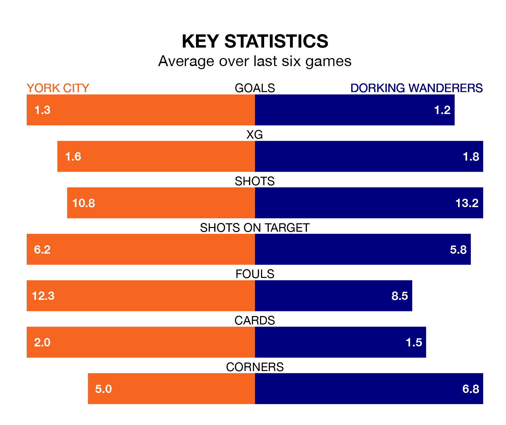

Dorking Wanderers travel to York City on late Tuesday in the National League.
The visitors come into the game on the back of a defeat in their last match, having lost to Halifax Town 3-1 at home, with a goal from Charlie Carter.
York, meanwhile, won their last match, 1-0 against Southend United, with their goal scored by Lenell Nicholas John-Lewis.
Dorking are 21st in the table after 31 games, of which they have won 10 and drawn four, earning 34 points.
York are three places ahead of Wanderers in 18th, with eight wins and 13 draws putting them on 37 points.
City are in reasonable form in the National League, with three wins and two draws from their last six games.
With two wins and four losses over that period, the visitors' form is worse – they have taken six points from 18, compared to the home team's 11.
With 37 goals in 31 games so far this season, Dorking are scoring at below the league average rate with 1.2 goals per game. And they are conceding more than average, letting in 53 goals at a rate of 1.7 per game.
York are also below average scorers, with 1.3 goals per game, compared to a league average of 1.5. They have conceded 1.5 goals per game.
In the last three years, York and Dorking have played each other on three occasions. They won one each, and they drew once.
Their last meeting was on August 26, when they played out a 2-2 draw.
Updated: 13:30 (UTC), 12/02/24